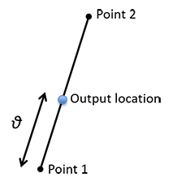

Single Line Source Model
Class Name
Location in Objects Pane
- Models > Model > Hazard > Earthquake > Location > Single Line Source
Model Description
Model Form
- This model produces a location on a straight line between Point1 and Point 2, typically an earthquake fault.

- For further information on this model, refer to Rahimi, H., Mahsuli, M. (2019) and Mahsuli, M., Rahimi, H., Bakhshi, A. (2019).
DDM Sensitivities
Properties
Object Name
- Name of the object in Rt
- Allowable characters are upper-case and lower-case letters, numbers, and underscore (“_”).
- The name is unique and case-sensitive.
Display Output
- Determines whether the model is allowed to print messages to the Output Pane
Point 1 Location
- Location object for one end of the line
Point 2 Location
- Location object for the other end of the line
Theta
- \({\vartheta}\) = Value between 0 and 1 that defines the output location, typically a random variable uniformly distributed between 0 and 1
Depth
- Depth of the output location, in km
Latitude Geometrical Uncertainty
Longitude Geometrical Uncertainty
Output
- Location object carried by a location response object
- The output is an automatically generated generic response object, which takes the object name of the model plus “Response”.
Right-click Menu
Remove
Display On Map
- Displays the object on map.
Remove From Map
- Removes the object from map.
References
- Rahimi, H., Mahsuli, M. (2019) “Structural reliability approach to analysis of probabilistic seismic hazard and its sensitivities,” Bulletin of Earthquake Engineering (DOI)
- Mahsuli, M., Rahimi, H., Bakhshi, A. (2019) “Probabilistic seismic hazard analysis of Iran using reliability method,” Bulletin of Earthquake Engineering (DOI)